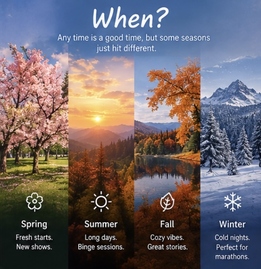
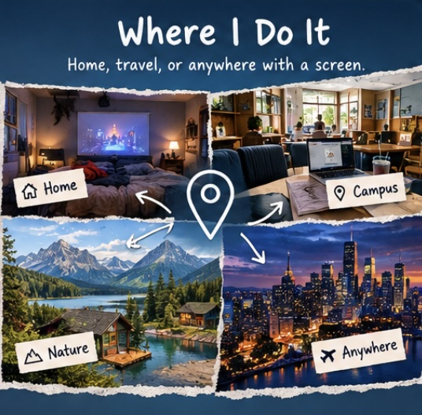
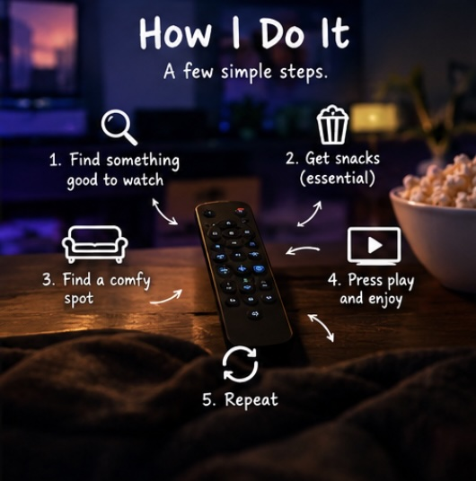
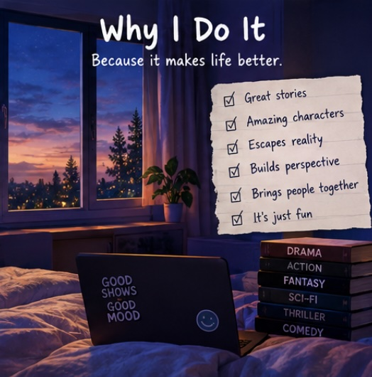

What: Show Watching
One of my favorite hobbies is watching television shows and animated series. I especially enjoy action, fantasy, science fiction, superhero stories, and anime.
The shows that interest me most usually have memorable characters, intense moments, distinctive visuals, and worlds with their own histories, rules, and mythology.
AI prompt used: Suggest an image concept representing the hobby of watching shows.
Who: Who I Watch With
I often watch shows on my own because it lets me focus on the story and take everything in at my own pace. I also enjoy talking about shows with friends who share similar interests.
Comparing favorite characters, discussing theories, and debating surprising plot twists can make a series even more enjoyable.
AI prompt used: Suggest an image concept for people sharing their interest in television.
When: When I Watch Shows
I usually watch shows when I have free time after classes, assignments, or other responsibilities. An episode can be a good way to relax after a busy day.
If a story catches my attention, I sometimes watch several episodes in one sitting, especially when each episode ends on a cliffhanger.

AI prompt used: Suggest an image concept showing when someone might watch a television series.
Where: Where I Watch Shows
I usually watch shows at home or in my room, where I can get comfortable and pay attention without too many distractions. Streaming services make it easy to continue a series across devices.
A comfortable place, a good screen, and reliable internet are usually all I need to enjoy a show.

AI prompt used: Suggest an image concept for a comfortable place to watch television.
How: How I Choose What to Watch
I usually choose a show based on its premise, characters, genre, visual style, and recommendations from people I trust. If the first few episodes grab my attention, I am more likely to keep watching.
Some of the things I look for in a show include:
- Interesting and complex characters
- A story that keeps me curious
- Memorable action, visuals, or music
- A fictional world with meaningful details
- Themes that give me something to think about

AI prompt used: Suggest an image concept representing how viewers choose what to watch.
Why: Why I Enjoy Watching Shows
Watching shows lets me experience stories and perspectives that differ from my own. I enjoy seeing how characters change, how conflicts develop, and how fictional worlds build their own histories.
I especially like stories that explore identity, morality, ambition, power, and human nature. Characters with complicated motivations are often more interesting to me than characters who are simply good or evil.

AI prompt used: Suggest an image concept showing why people enjoy watching stories.
AI Prompts
I used AI as a brainstorming and editing tool while organizing this page. I reviewed the suggestions and adapted them to fit the website's content and design.
Prompt 1: Content Brainstorming
Help me brainstorm content for a hobby webpage about watching television shows and anime. Organize the ideas around what, who, when, where, how, and why.
Prompt 2: Accessibility and Design
Suggest ways to make an HTML hobby page accessible, responsive, visually consistent, and easy to navigate.
Prompt 3: HTML and CSS Review
Help me review the CSS for a single-page hobby website, including responsive typography, image sizing, centered content, and readable lists.
Prompt 4: Validation Fixes
Review these website checker results and explain how to fix the reported issues without removing the single-page navigation.